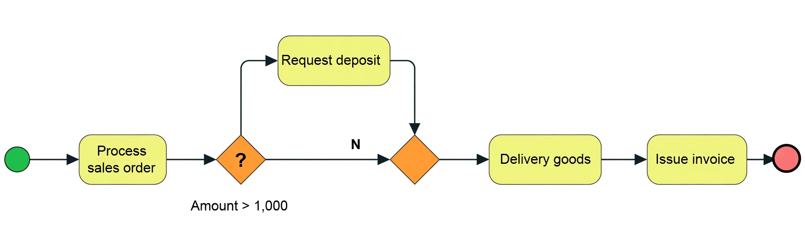
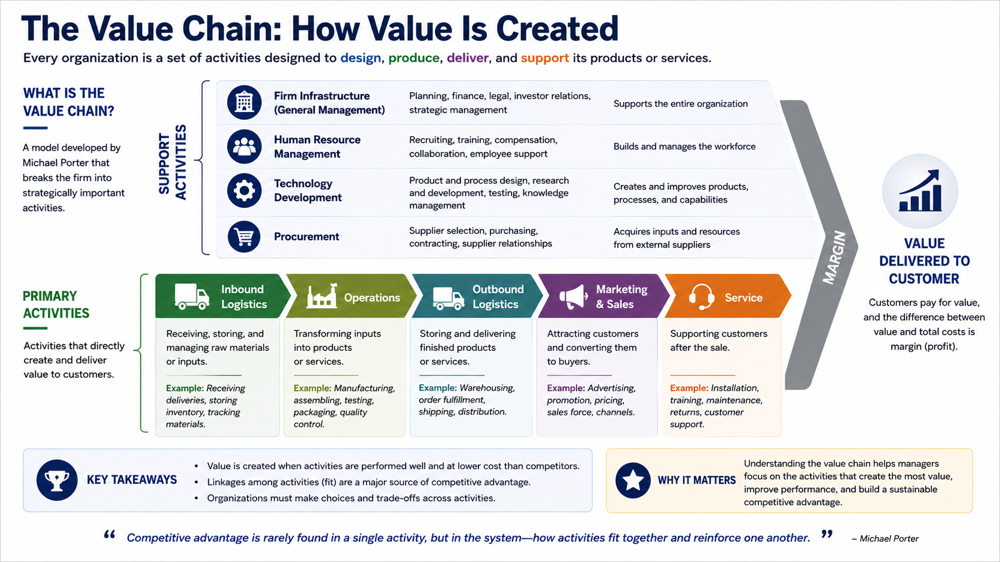

2.2 From Activities to Systems
Activities, Processes and Information Systems
Business activities are the individual tasks a firm performs to get work done. These are the basic building blocks of organizational work: the things people and systems do every day to create, move, record, and complete work inside the firm. Activities may be simple and routine, such as entering an order, checking inventory, answering a customer question, or approving an invoice, but together they form the operational reality of the business.
Business processes (operational processes) connect those activities into an organized flow of work (a series of steps). A business process is a linked sequence of activities that transforms inputs into outputs in order to achieve a defined business goal. Order fulfillment, hiring, and procurement are all examples: each coordinates multiple activities into a purposeful sequence.
There is a modest distinction between the terms. “Workflow” tends to emphasize the order and hand-off of work from one step to the next, while “business process” also stresses the purpose of that flow and the outcome it is designed to produce. In practice the two concepts overlap substantially and can usually be treated as nearly synonymous.
Examples of business processes are: Checking into a hotel; approving a loan application at a bank; registering for this class; receiving ordered materials into a warehouse.
Business processes often involve branches, which represent different workflow paths depending on certain conditions or decision points. These branches allow processes to adapt dynamically to varying inputs, criteria, or states within a system. The diamond in the example workflow is a common modeling technique to indicate a branch in the flow (which flows left-to-right).
Figure 2.2a Simple Business Process with a Branch in Process Logic

Source: Author-created adaptation.
Show long description
The figure is a simple process flowchart that begins with a green start circle on the left and ends with a red end circle on the right.
The main sequence of activities, shown as rounded yellow rectangles, is:
- Process sales order
- Delivery goods
- Issue invoice
Two orange diamond-shaped decision points appear after “Process sales order.”
- The first decision is labeled “Amount > 1,000.”
- If Yes (Y), the flow moves upward to a yellow activity box labeled “Request deposit,” then rejoins the main path.
- If No (N), the flow continues directly to the second decision diamond.
- The second decision diamond has no additional label; both the “Yes” path (from the deposit request) and the “No” path converge here and proceed to “Delivery goods,” then “Issue invoice,” and finally the red end circle.
The diagram illustrates a sales-order process in which orders exceeding 1,000 require a deposit before goods are delivered and an invoice is issued.
Information systems support business processes by capturing data, routing work, coordinating decisions, and reducing delays and errors. In many organizations the workflows themselves are increasingly encapsulated inside the information system: the sequence of steps, the rules that govern hand-offs, the data that must be recorded, and the conditions that trigger the next action are all defined and enforced by the software. A well-designed system therefore does more than assist the process—it becomes the operational embodiment of the process, making work faster, more accurate, more visible, and less dependent on informal coordination.
Taken together, a firm’s activities and processes form its value chain: the full set of value-creating work that helps deliver products or services to customers and generate returns for the business. The value chain concept is powerful because it reminds managers that value is not created by one isolated department or technology, but by the way many linked pieces of work fit together.
Systems thinking goes one step further by showing how those activities and processes interact over time rather than treating each one as isolated. It encourages managers to look for feedback loops, dependencies, bottlenecks, and unintended consequences.
Integration is what makes the system actually work. It connects the parts through technology, data, and coordination so that information flows smoothly across functions. In that sense, information systems are not just support tools; they are the connective tissue that helps the organization function as a coherent whole.
The Value Chain: How IT and AI Reengineer the Engine of Competitive Advantage
When you click "Buy Now" on Amazon for a pair of running shoes, an invisible, hyper-coordinated technological ballet erupts in a matter of milliseconds.
Miles away in a multi-story fulfillment megahub, an autonomous, wheeled robot receives a digital instruction. It zips across a polished concrete floor to locate the exact shelving pod containing your shoe size. Guided by computer vision and artificial intelligence algorithms that optimize travel time down to the fractional second, the robot ferries the pod to a human picking station. Simultaneously, an algorithm calculates the optimal shipping box size, schedules a regional delivery truck route based on live weather data, and triggers an automated reorder to the shoe manufacturer's facility in Vietnam.
Total time elapsed from click to package assignment? Less than five minutes.
Now consider what happens when a customer needs help after an order is placed. When fintech giant Klarna deployed an OpenAI-powered AI assistant across its global operations, the system handled 2.3 million customer support conversations in its first month — the equivalent workload of 700 full-time customer service agents. The average time required to resolve a customer issue fell from 11 minutes to under two minutes, while also improving wait times and accuracy.
How do companies like Amazon and Klarna consistently lower costs, speed up operations, and improve customer experience at scale? The answer is not simply that they have “better technology.” It is that they orchestrate technology across the entire value chain.
In business, technology is not an end in itself. It is a tool for creating value. To understand how information technology—and its newer evolutionary leap, artificial intelligence—transforms business, managers need a structural blueprint. That blueprint is Michael Porter’s Value Chain Framework.
Deconstructing the Value Chain: First Principles
Formulated by Harvard Business School strategist Michael Porter in 1985, the value chain is a conceptual framework that views a firm as a sequential chain of basic activities. Every company, whether a manufacturer, a software startup, or a fast-food franchise, is essentially a collection of discrete activities performed to design, produce, market, deliver, and support its product or service.
Figure 2.2b Porter’s Value Chain with example business processes

Source: Author-created adaptation.
Show long description
The figure is titled “PORTER’S VALUE CHAIN ARCHITECTURE.”
It is divided into two main sections.
The upper section is labeled “Support Activities” and lists four categories stacked vertically:
- Firm Infrastructure (Finance, Legal, Enterprise Systems, Strategy)
- Human Resource Management (Recruiting, Onboarding, Skill Mapping)
- Technology Development (R&D, Software Engineering, AI Models)
- Procurement (E-Sourcing, Automated Bidding, Contract AI)
The lower section is labeled “Primary Activities” and shows a left-to-right sequence of five linked stages: Inbound Logistics → Operations → Outbound Logistics → Marketing & Sales → Service
At the bottom of the figure the result is stated as an equation: MARGIN = Total Value Created (Customer Willingness to Pay) – Total Cost of Activities
The diagram illustrates how support activities enable the primary value-creating activities, with the difference between total value created and total cost equaling the firm’s margin.
Margin: The Ultimate Metric
At the right-hand end of Porter’s framework sits the ultimate objective: margin. Margin is simply the difference between the total value a firm creates (measured by what buyers are willing to pay for its product or service) and the collective cost of performing all value chain activities:
Margin = Total Value Created (Willingness to Pay) − Total Cost of Value Chain Activities
A firm becomes profitable—and achieves a competitive advantage—in one of two ways:
- Cost Leadership: It performs these activities at a lower total cost than competitors.
- Differentiation: It performs activities in a unique way that increases the customer's willingness to pay, allowing the firm to command a premium price.
The value chain breaks down a firm’s operations into two distinct categories: Primary Activities and Support Activities.
Primary Activities: The Line of Value Delivery
Primary activities are the core operational steps directly involved in physically creating a product, delivering a service, marketing it, and supporting buyers after the purchase. They form a sequential conveyor belt of value creation.
Inbound Logistics
Inbound logistics includes receiving, storing, inventory control, and tracking raw materials or vendor inputs before they enter the production process.
- Traditional View: Receiving crates of denim at a dock, writing down quantities on a clipboard, and storing them in a warehouse.
- The IT/AI Transformation: Radio Frequency Identification (RFID) tags, Internet of Things (IoT) sensors, and predictive inbound scheduling. At Spanish fashion retailer Inditex (parent company of Zara), every garment is tagged with an RFID chip at the logistics center. Zara’s systems track fabric shipments globally in real time, alerting floor managers to exact delivery windows down to the minute.
Operations
Operations represents the core transformation stage where raw inputs are turned into finished goods or services. In manufacturing, this is the assembly line; in a bank, it is loan underwriting; in a hospital, it is patient treatment.
- Traditional View: Assembly-line workers putting components together manually or human analysts reviewing paper loan applications.
- The IT/AI Transformation: Computer vision, robotic process automation (RPA), and predictive maintenance. Industrial giants like Siemens and General Electric embed thousands of IoT sensors into factory machinery. Predictive AI models analyze vibration and thermal data to detect machine wear before a breakdown occurs, eliminating costly unscheduled downtime.
Outbound Logistics
Outbound logistics focuses on collecting, storing, and distributing the finished product or service to final buyers.
- Traditional View: Packing boxes, stacking pallets, and handing bills of lading to truck drivers operating fixed, manual routes.
- The IT/AI Transformation: Automated fulfillment centers and algorithmic route optimization. Amazon operates over 750,000 mobile robots across its logistics network. Its custom AI engine, known as DeepFleet, orchestrates the paths of thousands of robots simultaneously within a single facility, reducing robot travel time by 10% and allowing 92% of US Prime customers to access same-day or one-day delivery.
Marketing & Sales
Marketing and sales activities induce customers to purchase products or services. This includes advertising, channel selection, pricing strategy, and sales force management.
- Traditional View: Static television commercials, print ads, and rigid annual price catalogs.
- The IT/AI Transformation: Dynamic pricing, hyper-personalized recommendation engines, and programmatic advertising. Airlines and hotels run sophisticated yield management systems that adjust prices every second based on demand, weather forecasts, and competitor pricing. Meanwhile, platforms like Netflix analyze billions of viewing signals to tailor artwork and recommendations to individual user profiles, directly driving customer retention.
Service
Service encompasses activities that maintain and enhance a product’s value after sale, including customer setup, technical support, repairs, and returns management.
- Traditional View: Call centers with long hold times, manual warranty claim forms, and slow mail-in repairs.
- The IT/AI Transformation: Conversational AI, remote telemetry, and automated self-service hubs. Modern connected vehicles like Tesla constantly transmit telemetry data back to engineering teams. If a vehicle experiences a suspension issue, technicians can often diagnose the bug remotely, ship a software patch over-the-air, or pre-order replacement parts to a service center before the owner even books an appointment.
Support Activities: The Operational Bedrock
Primary activities cannot function in a vacuum. Support activities provide the background infrastructure, technology, human talent, and raw materials necessary for primary activities to take place.
Procurement
Procurement refers to the business process of purchasing the inputs required to operate—ranging from raw steel and office supplies to cloud computing bandwidth and legal consulting. It is distinct from the physical movement of goods (which is Inbound Logistics).
- IT & AI Impact: E-procurement platforms connect buyers directly to supplier databases, running automated auctions and using AI contract analytics to parse thousands of vendor contracts for risk, compliance issues, and volume discount opportunities.
Technology Development
Technology development involves the equipment, hardware, software, procedures, and technical knowledge used to transform inputs into outputs. This includes traditional R&D, product design, and software engineering.
- IT & AI Impact: Generative AI for code development (e.g., GitHub Copilot) accelerates software deployment cycles. Computer-aided design (CAD) integrated with generative design algorithms allows engineers to feed weight, material, and cost constraints into AI systems, which synthesize optimized component designs in minutes.
Human Resource Management (HRM)
Human Resource Management consists of recruiting, hiring, training, compensating, and retaining employees.
- IT & AI Impact: Machine learning algorithms evaluate applicant resumes for skill matches, internal platforms use AI to map employee career trajectories, and natural language processing (NLP) tools gauge employee sentiment across corporate communication channels to reduce unwanted turnover.
Firm Infrastructure
Firm infrastructure includes general management, legal, finance, accounting, public relations, quality control, and strategic planning.
- IT & AI Impact: This is where Enterprise Resource Planning (ERP) systems reside. Modern cloud ERP platforms act as a single source of truth for financial health, regulatory compliance, risk modeling, and corporate strategy, providing executives with real-time dashboards rather than month-old accounting reports.
Strategic Positioning vs. Operational Effectiveness
Why study the value chain in an information systems course? Because managers often commit a fatal strategic error: confusing operational effectiveness with strategic positioning.
In his seminal work What Is Strategy?, Michael Porter argued that operational effectiveness means performing similar activities better than rivals—doing things faster, cheaper, or with fewer defects. While critical, operational effectiveness is rarely a source of sustainable competitive advantage because technology can be bought by anyone.
If Firm A buys a state-of-the-art enterprise inventory system, Firm B can buy the exact same software package off the shelf six months later. Operational effectiveness leads to competitive convergence, where every company looks identical and price wars erode industry margins.
Operational effectiveness means performing similar activities better than rivals—faster, cheaper, or with fewer defects. Information systems are powerful tools for operational effectiveness. They can compress cycle times, reduce error rates, and lower cost-to-serve. Yet operational effectiveness is rarely a source of sustainable advantage. Because many of the same technologies are available to competitors, improvements tend to be copied. The result is competitive convergence: firms look increasingly alike and compete primarily on price.
Strategic positioning, by contrast, means performing different activities from rivals, or performing similar activities in fundamentally different ways. Here the value chain becomes a strategic instrument. By deliberately configuring the entire set of activities—supported by distinctive information systems and data flows—a firm can create a unique logic that is difficult to imitate.
How It Works in Practice: Enterprise Systems as Connective Tissue
Operational improvements inside individual activities are necessary and often impressive. Yet when every competitor can purchase similar tools, the gains tend to be competed away. Sustainable advantage arises when the configuration of the whole chain—supported by distinctive data flows and process logic—is difficult for rivals to replicate.
The Zara (Inditex) example illustrates the point. Traditional apparel retailers operated on long, forecast-driven cycles: design far in advance, large overseas production runs, ocean freight, and eventual markdowns. Zara inverted the logic. Store-level sales and feedback data flow daily to design teams; small batches are produced quickly in nearby facilities; garments move by air and arrive rack-ready. Cycle time falls from months to roughly two weeks, and the share of full-price sales rises substantially. Zara did not merely automate existing steps; it re-architected the sequence of activities and the information flows that link them. That is strategic positioning, not just operational effectiveness.
Executing such a distinctive configuration requires more than isolated applications. The activities must share data and coordinate in near real time. Modern firms rely on three categories of enterprise systems to provide that connective tissue:
Enterprise Resource Planning (ERP)
An ERP suite integrates core transactional activities—accounting, finance, human resources, inventory, and operations—on a single database. When a salesperson enters a customer order into an ERP (like SAP, Oracle or odoo), the system automatically verifies credit limits (Finance), checks warehouse stock (Outbound Logistics), triggers a production run if stock is low (Operations), and schedules material reorders (Procurement).
Supply Chain Management (SCM)
SCM systems extend coordination beyond the firm’s boundaries to suppliers, contract manufacturers, and logistics partners. They support the kind of rapid, demand-driven inbound and outbound flows that Zara’s model requires—tracking shipments, adjusting schedules, and surfacing bottlenecks before they halt the chain.
Customer Relationship Management (CRM)
CRM systems (such as Salesforce or HubSpot) manage all customer touchpoints across sales, marketing, and post-purchase customer service. A well-integrated CRM ensures that when a customer contacts support, the agent instantly sees their purchase history (Operations), past billing status (Finance), and current marketing offers, enabling personalized service.
The Frontier: Artificial Intelligence across the Value Chain
While enterprise systems like ERP and CRM digitized the value chain, Artificial Intelligence (AI) is now automating decision-making within it. Machine learning, computer vision, and large language models (LLMs) act as force multipliers across every single link.
| VALUE CHAIN LINK | AI IMPACT & IMPLEMENTATION |
|---|---|
| Inbound Logistics | Autonomous fleet routing & predictive inventory ordering |
| Operations | Computer vision QA & AI-driven predictive maintenance |
| Outbound Logistics | Automated warehouse robotics & dynamic slotting models |
| Marketing & Sales | Hyper-personalized recommendations & real-time pricing |
| Service | Autonomous generative AI customer agents |
Predictive Maintenance in Operations
In capital-intensive industries like aerospace or energy, machine failure stops the entire value chain. Companies like Caterpillar embed AI sensors into construction equipment and mining rigs. Machine learning models process real-time oil temperature, pressure, and vibration signals, allowing technicians to fix an engine days before it fails on a remote job site.
Computer Vision in Quality Assurance
Traditionally, quality assurance in manufacturing relied on human inspectors visually checking products on a moving belt—a process prone to fatigue and human error. Today, high-speed camera systems paired with deep learning models inspect thousands of items per minute—detecting micro-cracks in semiconductor wafers or misprinted labels on medicine bottles with near 100% accuracy.
Generative AI in Product Development and Customer Service
- In R&D (Technology Development): Software engineers use generative AI code assistants to automate repetitive coding tasks, reducing software development cycles by up to 30% to 50%.
- In Service: As demonstrated by Klarna, conversational AI platforms powered by LLMs handle complex customer inquiries—processing returns, updating payment plans, and issuing refunds—in under two minutes without human intervention.
The value chain is not a static organizational chart; it is a dynamic blueprint for competitive strategy. Information technology and AI act as the connective tissue that links primary and support activities together.
Key Takeaways
Key Takeaways
The value chain helps firms understand where value is created and where costs arise, so it is useful for operational effectiveness: improving activities, reducing waste, lowering cost, and making processes run better. It is also a tool for distinctive strategic positioning: a firm can use the value chain to decide which activities to do differently from rivals, or to coordinate activities in a way that creates a unique advantage.
In reality, however, you will often encounter business processes that do not seem to contribute meaningfully to either operational effectiveness or distinctive strategic positioning. Some of these processes may have begun as a senior executive’s pet project, others may have persisted simply because “that is the way we have always done it” or rest on implicit assumptions that are no longer valid, and still others may remain in place because the organization lacks the time, resources, or will to make the necessary changes. Organizations are messy, and not every process exists because it clearly supports operational effectiveness or strategic positioning.
When managers evaluate a new technology—whether it is cloud ERP, RFID tags, or Generative AI agents—they should ask three core questions:
- Which specific primary or support activity does this technology transform?
- Does this implementation lower costs (C) or increase buyer willingness to pay (V) to expand overall margin?
- Does this technology reinforce a unique strategic positioning, or is it merely an operational quick-fix that competitors will copy tomorrow?
Key Terms and Definitions
- Value Chain
- A framework developed by Michael Porter that views a firm as a sequential series of business activities that create value for customers and yield a profit margin.
- Primary Activities
- The sequential core operational activities directly involved in creating, delivering, marketing, and servicing a product or service (Inbound Logistics, Operations, Outbound Logistics, Marketing & Sales, Service).
- Support Activities
- Business functions that provide the background infrastructure, human capital, technology, and purchasing capability needed to sustain primary activities (Procurement, Tech Development, HR Management, Firm Infrastructure).
- Margin
- The economic surplus calculated as the total value created (what buyers are willing to pay) minus the collective costs incurred across all value chain activities (Margin = V - C).
- Operational Effectiveness
- Performing similar operational activities better, faster, or cheaper than rivals. Essential for survival, but rarely a source of sustainable competitive advantage on its own.
- Strategic Positioning
- Performing different activities from competitors, or performing similar activities in fundamentally different, technology-enabled ways that are difficult to imitate.
- Enterprise Resource Planning (ERP)
- A software suite that integrates core business activities—finance, accounting, HR, and manufacturing—into a single centralized database.
- Supply Chain Management (SCM)
- An enterprise software framework that manages relationships, inventory flows, and logistics signals across firm boundaries with suppliers and partners.
- Customer Relationship Management (CRM)
- An enterprise system that tracks and manages all touchpoints between a business and its current or prospective customers across sales, marketing, and support.
- DeepFleet
- Amazon's custom AI engine that orchestrates real-time routing for hundreds of thousands of autonomous logistics robots across fulfillment centers.